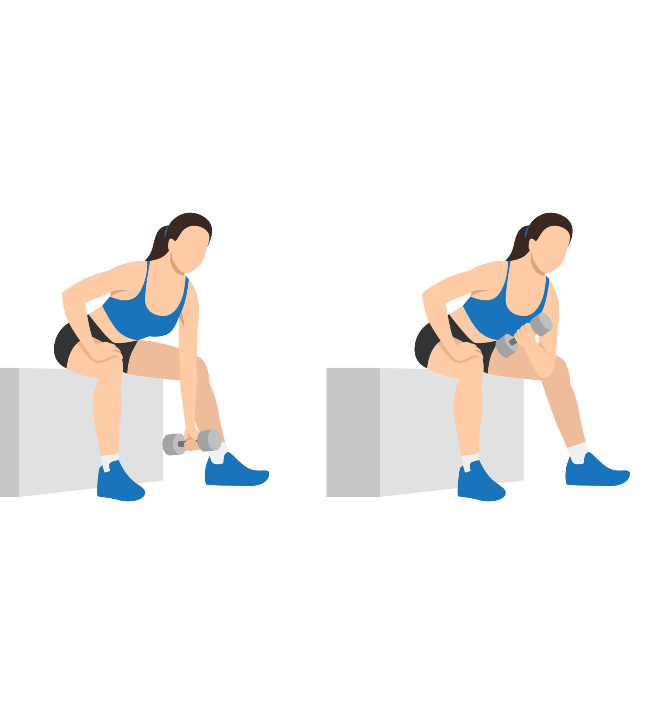

Exercise Description
Sit on a bench with your legs spread apart. Rest your elbow on the inside of your thigh and hold a dumbbell with your palm facing up. Curl the dumbbell towards your shoulder, then slowly lower it back to the starting position.
Reps and Sets
Beginners: 3 sets of 12-15 reps per hand
Weights: 7-10 kg dumbbells per hand
Rest time between each set: 45secs
Video Implementation